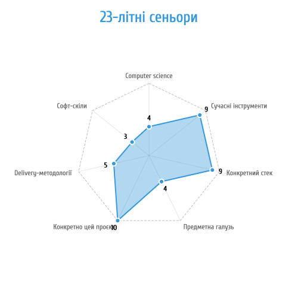
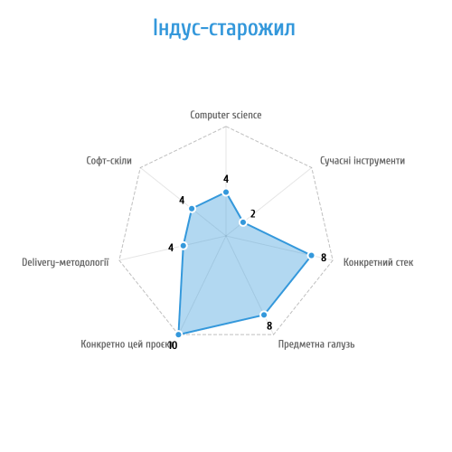
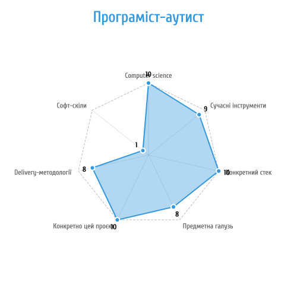

7 аспектів сеньйорності
В різних ситуаціях поняття «senior developer» може означати різні речі: хтось може братись за надскладні завдання, а інший — давно на цьому проєкті і швидко закриває таски. В цій статті я спробую подивитись на поняття сеньйорності з різних аспектів.
На одному проєкті, де я працював, в коді було багато замовчань: наприклад, всі ID для текстових публікацій починались на 1**** (наприклад, 12222), а ID відповідних картинок для них — на 8**** (відповідно, 82222). Чому такий дивний і не масштабований мапінг? Тому, що хтось колись зробив «костиль», а далі девелопери просто продовжували традицію. І коли я тільки прийшов на проєкт, тімлід здивувався, що я сам не здогадався, мовляв: «Так ти ж сеньйор?!».
Після того, як я підняв з підлоги свою відпавшу щелепу, я задумався — а дійсно, що таке сеньйор? Якщо тімлід сплутав тепле з м’яким, то, виходить, що є різні сорти сеньйорів?
Я дійшов до висновку, що, дійсно, є декілька напрямків, за якими сеньйор може розвиватись. Можна сказати, що бали сеньйорності конкретного девелопера на конкретному проєкті складаються з наступних аспектів.
1. Computer Science
Цей напрямок не дарма називається комп’ютерні НАУКИ — в якомусь сенсі, треба бути вченим: знати загальні ідеї типу теорії множин, теорії ймовірностей, структури даних, O-складність алгоритмів, черги, кешування та буферизацію, патерни проєктування і т.п.
Сеньйор цього аспекту розуміє базові принципи, що приводить до наступних наслідків. По-перше, якщо має бажання, може побудувати таке саме своє «з лайна і палок». По-друге, не захоплюється новими реалізаціями старих ідей: ну ок, з’явилась Kafka, але ж це просто шина даних, їх в тому чи іншому вигляді використовують вже півсотні років — якщо буде треба, додамо, а якщо ні, то принцип YAGNI ніхто не скасовував.
Ціль — мати уявлення, як аналоговий світ опрацьовується дискретними інструментами. (Якщо ви не зрозуміли слово «дискретний», то це може означати брак знань саме за цим пунктом).
Цей аспект, по ідеї, прокачується якісною освітою (факультет «Комп’ютерні науки»).
2. Сучасні інструменти
Треба знати всі ці Ажури з Кубернетесами, добре в них орієнтуватись, розуміти плюси та мінуси і через то уявляти, куди все далі буде рухатись. Наприклад, непогана ідея — слідкувати, що зараз вже вміє штучний інтелект. Досвідчений інженер може побудувати свою армію перцептронів, але нащо, якщо є стандартні реалізації нейромереж?
Ціль — не вигадувати велосипед.
Окрім проєктного досвіду, цей аспект прокачується тренінгами та сертифікаціями на відповідну тему — не такий важливий сам сертифікат, як підготовка до екзамену.
3. Конкретний стек
Наприклад, LAMP vs .NET. Як каже мій знайомий, «я не беру абстрактного синьйора, а беру синйьор Java/ .NET/ рhр/ whatever».
Ціль — знати мову так добре, щоб розуміти, для яких задач вона не підходить.
Тому сила тут приходить з суровим досвідом на реальних проєктах. На формошльопному проєкті немає потреби у Late Static Binding, але як тільки з’являється Фабрика Стратегій...
4. Предметна галузь
Якщо девелопер працює на проєкті в галузі «логістика», то він 100% знає, як працювати з координатами та часовими поясами, мацав руками формулу розрахунку відстані на сфері і не плутає UTC з GMT. Не секрет, що сутність «карта» має різні значення для галузей automotive, гемблінгу і платежів.
Одна з ознак добре освіченого спеца в цьому аспекті — це знання галузевих приколів.
Якщо компанія розуміє силу цього аспекту, вона перестає бути галерою з різноманітними проєктами — у компанії з’являється спеціалізація.
Ціль — перестати бути «несправжнім зварювальником».
Цей аспект прокачується або через Т-спеціалізацію (друга освіта — наприклад, «біоінформатика»), або через дистиляцію знання (в термінах Domain Driven Design) з людьми замовника, або через багато років гризіння кактуса (досвід).
5. Конкретно цей проєкт
Я це називаю «старожил». Старожил знає відповіді на питання «чому саме так?» — всі нашарування логіки проєкту, де що лежить, чому були прийняті ті чи інші рішення, і чому ID колекції картинок має починатись на «8». Отримати ці знання — це половина затрат на нового девелопера.
Ціль — опанувати крихкий баланс «костилів».
6. Delivery-методології
Скрами, канбани й інші сейфи дані нам для того, щоб досягнути результату у прогнозований час. Сеньйор це розуміє, і тому йому не треба пояснювати, чому треба різати задачі з 20 сторіпойнтів на дрібні таски, нащо потім за ними логувати час і т.п. Досвідчений сеньйор знає, що єдиний спосіб захиститися від питань менеджерів або клієнтів «ну що там, коли вже?» — це дати visibility своїх тасків у трекері.
7. Софт-скіли
Все, що написано вище — це хард-скіли, роботу треба вміти робити. Але є ще і питання стилю. Софт-скіли включають англійську мову, вміння працювати з клієнтом напряму, вміння взаємодіяти з підлеглими, вирішення конфліктів. Є якась пекельна впевненість в очах сеньйора, коли він натискає «Деплой» на Продакшн-сервері — джун так ще не вміє.
Софт-скіли напрацьовуються з дитячого садочка і далі в процесі самоактуалізації людини.
Ціль — (про це я вже писав) вчитись не бути «Джоном Сноу на вечірці».
Розберемо архетипи.
23-річні сеньйори — добре розібрались в сучасних технологіях та конкретному стеку, ідеально знають цей конкретний проєкт. Але професійно провалюються в computer science і галузі, а іноді — ще й персонально у софт-скілах.
Індус-старожил на стороні замовника (національність варіюється, але типаж ви впізнаєте) — за роки роботи ідеально знає цей конкретний проєкт і тримається за своє місце в очікуванні IPO. Непогано знає конкретний стек і предметну галузь, тому вважає себе повноцінним сеньйором, і через то поводиться не дуже ввічливо (бракує софт-скілів), типу «де ви були 8 років?». Має діру за показником знання сучасних інструментів, тому або саботує їх, або винаходить свої «костилі».
Програміст-аутист — похмурий сеньйор з рівнем комунікації близько нуля (не прокачані софт-скіли), який з одного боку все знає, а з іншого, — майже не розмовляє ні з ким. Був в нас девелопер, який тільки вітався та прощався на дзвінках, ми його називали «хай-бай девелопер», потім він мовчки змінив стек на свому підпроєкті з РНР на Пайтон, а ще згодом — звільнився.
